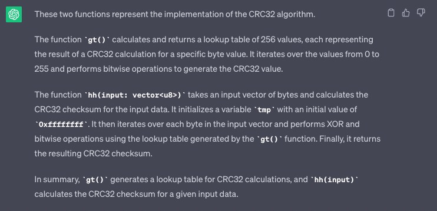

Introduction
Excited by the opportunity to host a one-of-a-kind CTF at the Denver Sui Builder House, together with my colleagues from OtterSec we created a framework that makes crafting CTF challenges a breeze. In the upcoming article, we'll take a deep dive into the world of the Sui blockchain, explore its mechanics, and discover how we can leverage specific features to build and run CTF challenges. Without further ado, let's buckle up and get started!
OtterSec and Sui Foundation announce the SuiTF Challenge for Denver #SuiBuilderHouse attendees! pic.twitter.com/ONT4oXOWgx
— OtterSec (@osec_io) February 28, 2023
Below are the links to participate along with the prizes!
— OtterSec (@osec_io) February 28, 2023
Winners will be KYC’d to ensure they have attended the Denver Builder House.
Good luck! pic.twitter.com/57CPljmuSS
SUI who?
If you are new to the world of blockchain, chances are that the word "SUI" doesn't sound familiar, but for those in the loop, it's a term that has been making quite a buzz lately.
But anyway, let's start at the very beginning...
SUI (pronounced "swee") is a Layer-1 proof-of-stake blockchain with smart contract capabilities.
The project is the brainchild of the Mysten Labs team - a company founded by former employees of Meta (Facebook), who also contributed to the Libra Project.
SUI operates in epochs (1 epoch = 24 hours).
Each epoch is managed by a committee of validators, and this committee changes from one epoch to another.
This setup facilitates the delegation of stakes to validators, which helps strengthen voting power and earn a share of the fees.
Now, all validators are, of course, orchestrated by a Consensus Engine, which in this case is Bullshark + Narwhal as the mempool.
For a more detailed explanation, I recommend referring to the official documentation.
So, with this skeletal system in place, let's now shift our focus to the cardiovascular system of the network - transactions. Every update, communication, or transmission takes place through a transaction. The information that can be transmitted through a transaction includes the
sender's address , gas input , gas price , maximum gas budget , epoch , type + associated data , authenticator , and expiration
The lifeblood of this network, that we call a transaction, can take various forms, from smart contract calls to native transactions (token transfers, etc).
And finally, what catches the eye is the muscular system, which represents the objects. In SUI, the term "object" is used as a unit of storage measurement. In contrast to other blockchains where storage is structured around accounts, SUI's storage is structured around objects:
- Move Module (smart contract) - is an object
- Move Object (NFT) - is an object as well
- Owned by an address
- Owned by another object
- Immutable (global read-only - e.g., SUI move packages)
- Shared (anyone can read or write)
MOVE where?
Alright, now that we have a general idea about this blockchain, it's time to address the elephant in the room - who is MOVE?
MOVE is the programming language used to create smart contracts. It also traces its roots back to the offices of Meta, but for SUI specifically, there have been a few modifications:
- Objects have a global, unique ID
- Object-centric global storage
- Entry points accept object references as inputs
- Addresses represent object IDs
SuiTestAdapter
When you're just getting started with Sui, one of the first things you do is download sui-cli (Sui Command Line Interface). This tool enables you to perform a variety of operations, for example:
-
Creat new Account
sui client new-address ed25519 -
Create new Move Module
sui move new demo_package -
Compile Move Module
sui move build -
Publish Move Module
sui client publish $PATH_TO_PACKAGE/demo_package --gas 0x1337 --gas-budget 30000 -
Call Entry Functions
sui client call --function function_name --module sui --package 0x31337 --args $OBJECT_ID "[1, 3, 3, 7]" --gas-budget 30000 -
Run Local Network
sui start -
Execute various Validator Operations
sui client call --package 0x2 --module sui_system --function request_remove_validator --args 0x5 --gas-budget 10000 -
View Objects an Address Owns
sui client objects -
Test Module Module
sui move test
One operation that is particularly interesting is the testing operation. Tests are designed to help programmers test a specific functionality of the program. There are three annotations
to the Move source language: #[test] #[test_only] #[expected_failure].
However, unit tests do not support certain features that programmers may wish to test (e.g. there is no way in Move unit tests to query if a specific event has been emitted) and that is because unit tests don't use an Adapter.
Because of that, the Expected Value Tests framework was created, it helps with writing tests that need to check for events, and expect specific states:
Alright, now let's now open Pandora's box, and for that, we'll direct our attention to sui/crates/sui-transactional-test-runner/src.
This is a library that implements a SuiTestAdapter, which is later sent to move/testing-infra/transactional-test-runner/src/framework.rs along with a source file.
The run_test_impl function handles parsing the source program and extracting tasks delimited by the //# identifier. Once the tasks are extracted, they are executed in order.
- Init
- PrintBytecode
- Publish
- Run
- View
- Subcommand
They are handled in the handle_command function.
Quite interesting, isn't it?
Essentially, this adapter provides access to all the primary functionalities required for running and interacting with a smart contract.
Why don't we try to harness its potential and transform it into a CTF framework instead of just a simple Test framework?
sui-ctf-framework
Spoiler alert, that's exactly what we did! https://github.com/otter-sec/sui-ctf-framework/blob/main/src/lib.rs 🤭
Using only 4 of the predefined tasks, we created a lightweight framework, which creates a SuiTestAdapter object along with an arbitrary number of accounts.
Once the adapter is created, we can use it to publish the Challenge smart contract & Solution smart contract under the challenge and solution accounts.
With the modules published, we can call any entry public fun from the Solution module which is supposed to solve the challenge.
Lastly, the view_object function allows you to either debug or check if certain objects were altered according to the intended solution.
baby_otter
Alright, let's cut to the chase and dive into a real challenge.
At justCTF 2023, an online Jeopardy-style CTF where OtterSec served as one of the sponsors, participants were faced with a sui challenge called "baby_otter.
This particular challenge provides a prime illustration of how the sui-ctf-framework seamlessly integrates with a CTF scenario. challenge source
A quick glance at the source code of this problem reveals two main components: a Server and a Client.
The server can be found in the framework folder, while the client resides in the framework-solve folder.
Both the server and the client are Rust applications, so their source code can be found in the src subfolder.
Let's analyze them one by one.
-
The Server opens a socket on port 31337 and waits for a connection to be established.
Once established, the execution is directed to the 'handle_client' function.
- Right from the start, we can see that two
named_addresses(challenge and solution) and twoaddresses(challenger and solver) are initialized, followed by a call to thesui_ctf_framework::initializefunction, which returns anadapter. -
The next step performed by the server is to
publishthe challenge smart contract asbytecode(CompiledModule). It then waits for the connected client to send the compiled bytecode of the solution smart contract, which will be published as well. - The third step, after publishing both contracts under the addresses challenger and solver, is for the server to invoke the
sui_ctf_framework::call_functionfunction, thus calling the public functionsolveof the solution contractbaby_otter_solution. -
The last step in the server's source code is to call the
is_ownerfunction of thebaby_otter_challengesmart contract. If it doesn't return an error, it means the task has been solved, and the flag will be sent to the client
- Right from the start, we can see that two
-
The Client attempts to connect to an IP address and Port, and then proceeds with the following steps:
- It reads the compiled module
baby_otter_solution.mvand sends it to the server. - Waits for a response from the server (hoping it's the flag) and prints it.
- It reads the compiled module
There you have it, a simple method to run a challenge where the author defines a move module representing the task, and it's up to the participants to implement a move module representing the solution to the task.
Now, since we've come this far, let's briefly see what the challenge module is all about.
The file framework/chall/sources/baby_otter_challenge.move defines an init function, which is called during the contract publish operation.
This function publicly exposes an object named Status that holds the challenge status (solved or unsolved).
Furthermore, we can observe two peculiar local functions named gt and hh, along with two public entry functions named request_ownership and is_owner.
The is_owner function, which we recall from the server source, appears to simply check if Status.solved == true.
On the other hand, the request_ownership function takes an input called ownership_code : vector, which is passed to the hh function.
The result of this function is then compared to the value 1725720156. If they match, Status.solved will be set to true otherwise, it remains false.
So the objective of the challenge is to determin a special code which generates the value 1725720156
Solution
This can be achieved in three different ways:
-
The Intended Way:
The goal is for the players to notice that the two suspicious functions actually represent the implementation of theCRC32algorithm. This realization could have been achieved either through experience and recognizing certain constants that give away the implementation, or simply by passing these two functions toChatGPT, which is capable of recognizing the implementation:

After that, the hash could be cracked using an open-source tool such as: https://github.com/theonlypwner/crc32 -
The Hard Way:
https://j4x.tech/ctfs/justctf2023_baby_otter/ -
The Cool Way:
Before we proceed, if move prover doesn't ring a bell, I kindly ask you to read this article written by my colleagues and myself, which will provide you with all the necessary information to understand this method.
spoilers
Actually, nevermind, the first reader to solve the challenge using theMove Proverand then send it to fedex@osec.io will receive some cool swag 😎
Closing Thoughts
I hope it has been a pleasant read, and that you've learned at least one new thing today.
I got plenty of bookmarked ideas, but unfortunately time doesn't allow me to share them all
Until next time, take care and God bless! 👋